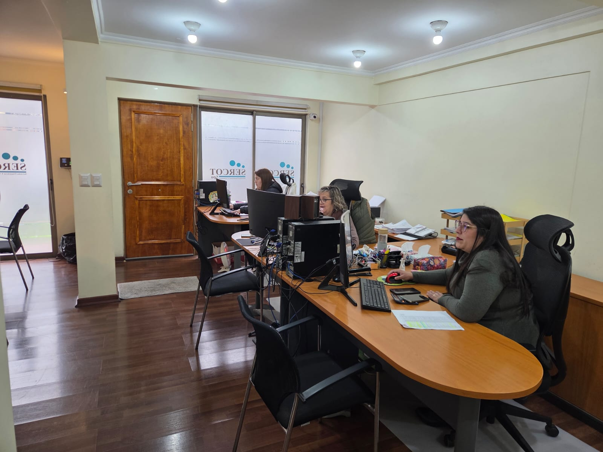

SERVICIOS CONTABLES Y TRIBUTARIOS
Tu negocio,
con claridad.
Tu futuro,
con respaldo.
Entiende tus números, ordena tu actividad y toma decisiones con un equipo que conoce tu negocio.
PERSONAS REALES. ACOMPAÑAMIENTO CERCANO.

UN SERVICIO PARA CADA NECESIDAD
¿En qué etapa
está tu negocio?
Cada situación merece su propia mirada. Explora nuestras áreas y encuentra el acompañamiento que necesitas.
Contabilidad para empresas
Contabilidad y acompañamiento para entender la información de tu empresa y tomar decisiones con mayor claridad.
Conocer el servicio →02 ↗Remuneraciones y gestión laboral
Acompañamiento en remuneraciones y documentación laboral para la operación de tu empresa.
Conocer el servicio →03 ↗Operación renta
Preparación y acompañamiento en el proceso anual de renta de empresas y socios.
Conocer el servicio →04 ↗Contabilidad para médicos
Contabilidad y planificación tributaria para médicos y sociedades médicas, con una atención que parte por conocer tu actividad.
Conocer el servicio →05 ↗Devolución de IVA por cambio de sujeto
Revisión de antecedentes y gestión de solicitudes de devolución de IVA por cambio de sujeto ante el SII.
Conocer el servicio →06 ↗Devolución de IVA exportador
Acompañamiento especializado para evaluar y gestionar solicitudes de devolución de IVA exportador.
Conocer el servicio →07 ↗Organización societaria y patrimonial
Análisis de los aspectos contables, societarios y tributarios de tus empresas y de su organización a futuro.
Conocer el servicio →08 ↗Creación de empresas
Acompañamiento para elegir una estructura societaria y organizar las gestiones de puesta en marcha de tu empresa.
Conocer el servicio →09 ↗Asesoría tributaria puntual
Una instancia para revisar tu situación, ordenar tus preguntas y entender las alternativas que conviene evaluar.
Conocer el servicio →ASÍ TRABAJAMOS
Primero entendemos.
Después, avanzamos.
No todo se resuelve con el mismo formulario. Partimos por conocer tu actividad, tus antecedentes y lo que necesitas resolver.
Cuéntanos tu caso ↗- 01
Conocemos tu situación
Escuchamos qué necesitas y qué momento vive tu negocio.
- 02
Definimos una ruta
Evaluamos los antecedentes y acordamos el alcance del trabajo.
- 03
Te acompañamos
Organizamos las gestiones y te ayudamos a entender los siguientes pasos.

EL SIGUIENTE PASO EMPIEZA AQUÍ